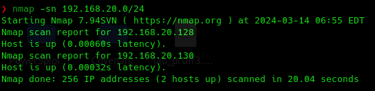
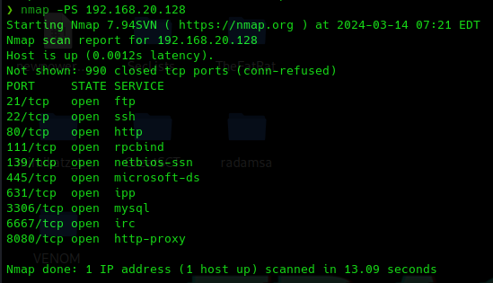

https://nmap.org/book/man-host-discovery.html
-sL (List scan)
Podríamos hacer una resolución DNS reversa para tratar de obtener el nombre de dominio a partir de una dirección IP
-sn (No port scan)
Esta opción le dice a N MAP que no realice un análisis de puertos después de realizar el host Discovery y que solamente nos saque por pantalla aquellos host que se encuentran disponibles.
Esta primera opción sirve para identificar hosts que se encuentran conectados a una red, y nosotros debemos estar también conectados en esa misma red para poder hacer ese descubrimiento.
Para escanear la subred donde se encuentran nuestras máquinas.
nmap -sn 192.268.20.0/24

Cuando nosotros ejecutamos este comando con privilegios de administración, el funcionamiento de NMAP es diferente.
Nosotros lo hemos ejecutado sin privilegios de administración y lo que ha hecho ha sido establecer o tratar de establecer una conexión TCP con una máquina de destino.
La máquina podría estar levantada, pero no tener servicios corriendo en el puerto 80 en el puerto 4 4:3 y esto quizá podría provocar que pareciese que esta máquina no está funcionando.
Si lo ejecutamos como administrador no utiliza el protocolo TCP sino que recurre también al protocolo ARP, que es el que se encarga de asociar la dirección MAC de un dispositivo su dirección IP.
Esta técnica con el protocolo ARP es menos intrusiva que mandar peticiones TCP a las máquinas de la subred.
A tener en cuenta también que al realizarlo con privilegios de administrador podemos obtener hosts que si están levantados pero no responden a las peticiones TCP.
Tenemos otro tipo de técnicas que podríamos aplicar.
-PS (TCP SYN Ping)
Esta de aquí que es una de las más populares, probablemente que trata de mandar un paquete TCP SYN vacío.

No solamente nos está diciendo que este host está levantado, sino que además nos dice de los puertos que tiene ese host cuáles están abiertos.
Hay que tener en cuenta que primero comprueba que el host esta activo, pero después como podemos observar, comienza a hacer un análisis de puertos.
Es mucho más intrusivo porque genera mucho tráfico de red.
Se puede especificar un puerto concreto:
nmap -PS 192.168.20.128 -p 80
Y se puede modificar el al que hace la petición para comprobar si está activo:
nmap -PS21 192.168.20.128 -p 80
nmap -PS21,22,23 192.168.20.128 -p 80